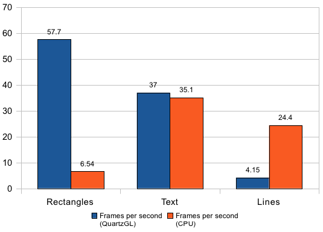

Please note: this article is part of the older "Objective-C era" on Cocoa with Love. I don't keep these articles up-to-date; please be wary of broken code or potentially out-of-date information. Read "A new era for Cocoa with Love" for more.
Mac QuartzGL (2D drawing on the graphics card) performance
QuartzGL was introduced as an official feature in Mac OS X 10.5 Leopard (although it was a developer-only feature in Mac OS X 10.4 as Quartz 2D Extreme). However, it is off by default and is largely ignored by most developers. In this post, I look at how to enable QuartzGL, the performance impact it has on different kinds of drawing and whether you should use it in your Mac programs.
Introduction
A graphics card can render 3D graphics hundreds of times faster than a CPU and graphics cards are used to accelerate compositing of windows on the desktop for a many-fold performance increase.
Despite the advantages of graphics cards in these areas, 2D geometry on the Mac is normally generated by the CPU in main memory. You can opt to have your program drawn on the graphics card instead but this option is off by default. This 2D on the graphics card drawing is named QuartzGL.
QuartzGL works by generating an an OpenGL ARB_fragment_program (pixel buffer drawing commands) and performing on the graphics card what would ordinarily be performed on the CPU.
It shouldn't take you very long to guess the reason that it is disabled by default: QuartzGL does not improve all kinds of drawing. An ARB_fragment_program does not use the same geometry processing that 3D graphics relies upon, so it's unlikely to be the most optimized part of the GPU. For some kinds of drawing, it will perform considerably worse than regular CPU-based drawing. The question I hope to answer is: what kinds of operation go faster, what kinds are unaffected and what kinds might go slower?
How to enable QuartzGL
You can enable QuartzGL for your program by editing your Info.plist file. Just insert a boolean value QuartzGLEnable and set it to true.
<key>QuartzGLEnable</key>
<true/>Of course, you could also do this for any program if you wish. Edit the Info.plist and see what happens the next time you run it.
The test code
I'll run three tests:
- drawing semi-transparent rectangles
- drawing text
- drawing randomly placed lines
If you're curious about why I'm testing these: I experimented with a number of different drawing primitives and decided that these were the most common drawing primitives that produced the most widely varying results.
This is the drawing code:
#if TEST == 1
[[[NSColor redColor] colorWithAlphaComponent:0.01] set];
for (NSInteger k = 0; k < 1000; k++)
{
[[NSBezierPath bezierPathWithRect:rect] fill];
}
#elif TEST == 2
for (NSInteger j = 0; j < 2000; j++)
{
NSString *displayString =
@"A string to excercise basic Cocoa text drawing.";
[displayString
drawAtPoint:NSMakePoint(0, 0.5 * self.bounds.size.height)
withAttributes:nil];
}
#elif TEST == 3
[[NSColor grayColor] set];
for (NSInteger l = 0; l < 2000; l++)
{
CGFloat xCoord1 = self.bounds.size.width * random() / (CGFloat)INT_MAX;
CGFloat xCoord2 = self.bounds.size.width * random() / (CGFloat)INT_MAX;
CGFloat yCoord1 = self.bounds.size.height * random() / (CGFloat)INT_MAX;
CGFloat yCoord2 = self.bounds.size.height * random() / (CGFloat)INT_MAX;
NSBezierPath *line = [NSBezierPath bezierPath];
[line moveToPoint:NSMakePoint(xCoord1, yCoord1)];
[line lineToPoint:NSMakePoint(xCoord2, yCoord2)];
[line stroke];
}
#endifTest results
You can download the complete project for the QuartzGLTest (32kb).
I ran the test on a 2.66Ghz Quad Core Mac Pro with an ATI Radeon HD 4870 graphics card. I used the Quartz Debug program to disable "Beam Sync" during the tests. The window in the test application is resizeable but I ran it at the default 480 by 400 pixel content size.
The raw FPS rates here are not really important (I chose the number of iterations fairly arbitrarily). The important point is the relative difference between the QuartzGL and CPU tests.
As you can see, QuartzGL's impact ranges from nearly a 10 times performance improvement in the best case, through to an 83% speed reduction.
Conclusion
The performance improvement for semi-transparent rectangles is considerable but it is hard to recommend QuartzGL in general. Time consuming drawing operations are likely to have an even mix of both lines and flat color areas, resulting in a negligible difference either way.
I spent some time once talking with an engineer who had worked on what was then Quartz 2D Extreme. He gave the impression that Apple had been initially very hopeful about its potential — as were many onlookers like myself. It just seemed like drawing on the graphics card should be 10 times faster for everything. But as this engineer related, they simply could get around bottlenecks that kept the whole system at disappointing speeds.
Ultimately, you are more likely to improve drawing performance more through reducing redraw than through increasing draw speed. For example, you could cache areas of your drawing in CoreAnimation layers, eliminating the need to redraw and relying on what your graphics card does well: compositing. As an aside, CoreAnimation appears to disable QuartzGL so you can't do both.
It's unclear if graphics card drawing will improve in future. I doubt the current ARB_fragment_program implementation will ever see dramatic improvement but with OpenCL and other forms of GPU-based programming, it certainly feels like a reimplementation using a newer technology could yield better results. Of course, this "feeling" didn't help the original ARB_fragment_program implementation succeed. Additionally, OpenCL remains constrained by features that only work on specific graphics cards (like image buffers). And OpenCL doesn't change the bottleneck of transferring data backwards and forwards between the CPU and graphics card (something which does not necessarily improve even when the CPU and GPU themselves increase in speed).
Finally, none of this should be taken as an indication that Quartz drawing on the CPU is particularly slow; it's not. But if you're wondering if you could squeeze a little extra performance out of your program by switching to QuartzGL — probably not unless the key limitation in your program is raw pixel fill rate and you have relatively few lines.
A history of iOS media APIs (iPhone OS 2.0 to iOS 4.3)
User interface strings in Cocoa